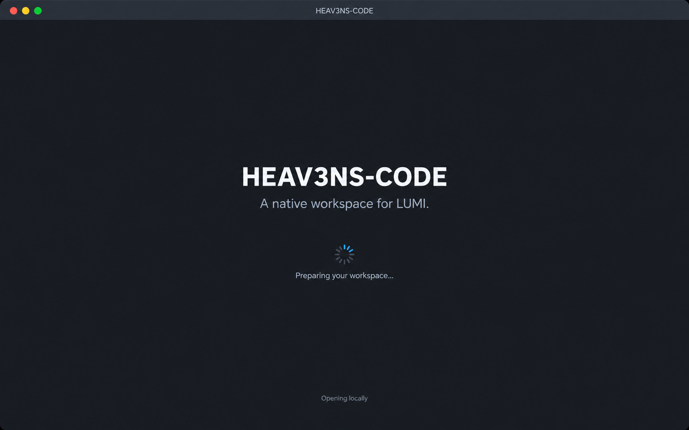

Launch
Recognize the app while it prepares the local session.

Prototype only. Continue below or use Show hotspots to explore the image.
Flow intent
A brief launch state. Returning users skip welcome and sign-in when their connection is valid.
Design boundary
These are generated visual concepts with simulated navigation. Auth, project pinning, file tabs, and symbol indexing are proposed capabilities. The current Swift/AppKit app is unchanged.
Recovery paths and implementation notes
These supplementary states explain recovery; the twelve full-size generated screens show the main journey. Only the marked hotspots and gallery controls are interactive.
File contents in these images are illustrative. Explorer represents folders on disk; Outline represents symbols in the active file. Opening a file changes inspection and does not silently attach it to a model request. Read-only inspection and recorded task evidence remain separate from editing and approval.
Pattern references: VS Code navigation, Xcode project navigation, and OpenAI browser sign-in. The study adapts these patterns; it makes no claim of a completed integration.